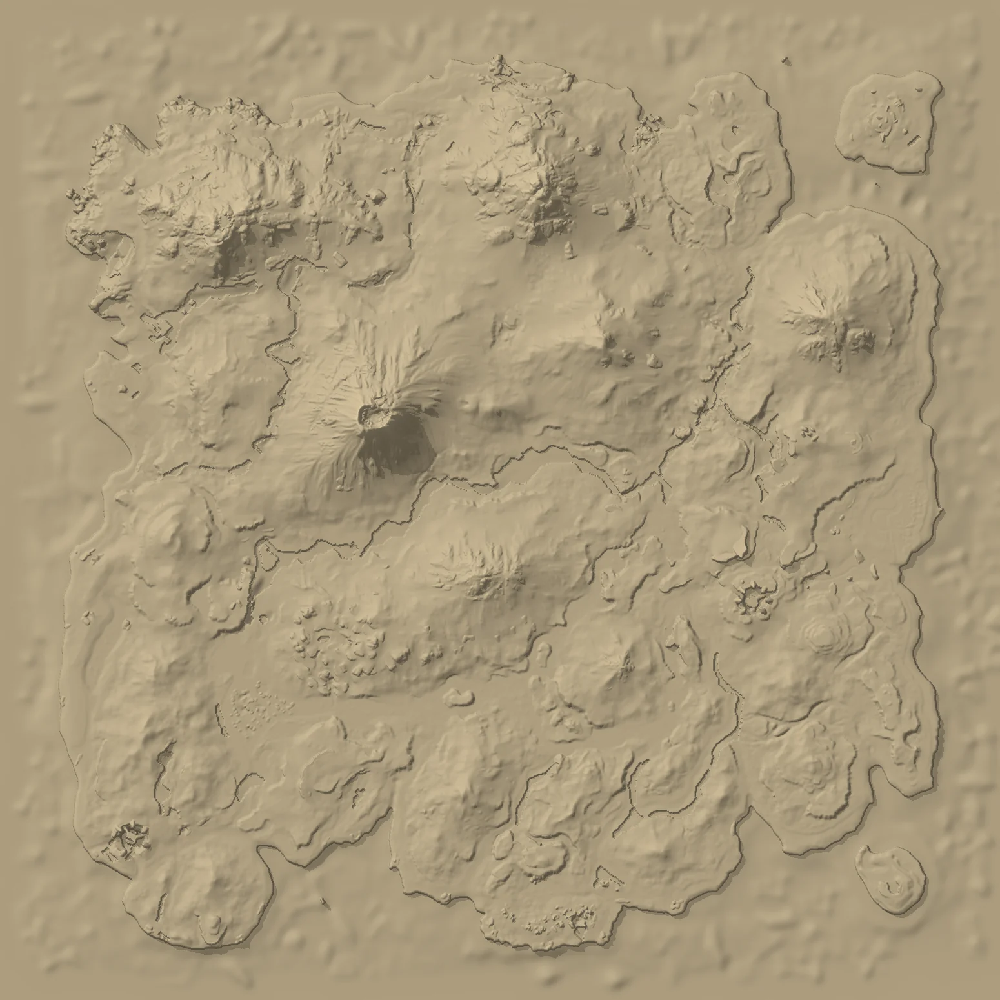

THE ISLAND
ARK: Survival Evolved & Ascended
Every callout on your relief. Tap a marker for the name and what you find there, or test yourself.

Where is
About The Island
- Release date
- June 2, 2015 – the map ARK: Survival Evolved launched with
- Remake
- October 25, 2023 – rebuilt in Unreal Engine 5 for ARK: Survival Ascended
- Size
- About 6.8 × 6.8 km including the ocean
- Bosses
- Broodmother Lysrix, Megapithecus and the Dragon at the three Obelisks, the Overseer in the Tek Cave
- Story
- The first ARK of the story – Helena Walker's explorer notes begin here
- The relief
- Built from the game's Dev Kit terrain, close to true vertical scale (about 0.9×) – no height exaggeration